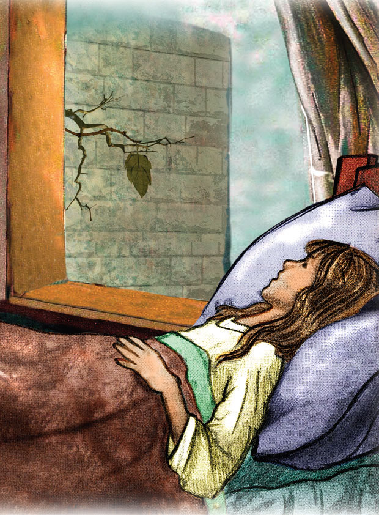

<!DOCTYPE html>
<html>
<head>
    <meta charset="utf-8" />
    <title>ItStep</title>
    <style>
      
        img {
            width: 80%;
            height: auto;
            display: block;
            border-radius: 10px;
            border: 2px #ccc solid;
        }

    </style>
</head>
<body>
    <div id="header"></div>
    <div id="container"></div>
       
    <script crossorigin src="https://unpkg.com/react@18/umd/react.production.min.js"></script>
    <script crossorigin src="https://unpkg.com/react-dom@18/umd/react-dom.production.min.js"></script>
    <script src="https://unpkg.com/@babel/standalone/babel.min.js"></script>

    <script type="text/babel">
        
        const styleObj1 = {
            color: '#333',
            textAlign: 'center'
    };

    const styleObj2 = {
        color: '#555',
    };

    const styleObj = {
                border: '2px solid #ccc',
                borderRadius: '10px',
                padding: '20px',
                maxWidth: '400px',
                margin: '20px auto',
                backgroundColor: '#f9f9f9'
            };

        ReactDOM.createRoot(document.getElementById("header"))
            .render(<h1>Hello React!</h1>);
 
        ReactDOM.createRoot(document.getElementById("container"))
            .render(
            <div id="items" style={styleObj}>
                <h2 style={styleObj1} >Любимейшая книга</h2>
                <ul>
                    
                    <li style={styleObj2}><strong>Название:</strong>Последний листок</li>
                    <li style={styleObj2}><strong>ФИО автора:</strong>О.Генри-псевдоним Уильяма Сиднея Портера</li>
                    <li style={styleObj2}><strong>Жанр книги:</strong>Новелла</li>
                    <li style={styleObj2}><strong>Количество страниц:</strong>160</li>
                    <li style={styleObj2}><strong>О чем книга?</strong>Трогательная история о девушке, долгое время болеющей затяжным воспалением легких и одержимой болезненной фантазией о том, что ей осталось жить ровно столько времени, сколько нужно для того, чтобы с ветвей плюща за окном облетели все листья. Сосед девушки, невоздержанный на язык старик, запойный пьяница, нищий и неудачливый художник, ценой собственной жизни создает свой единственный шедевр, позволяющий больной отказаться от мыслей о смерти и окончательно выздороветь.</li>
                </ul>
            </div>)
    </script>
</body>
</html>
